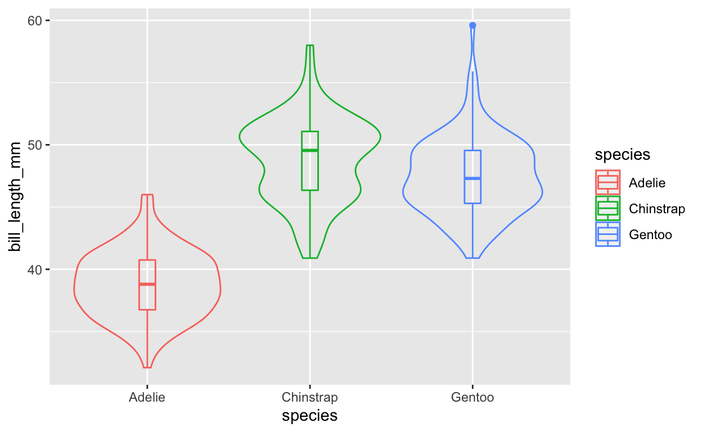
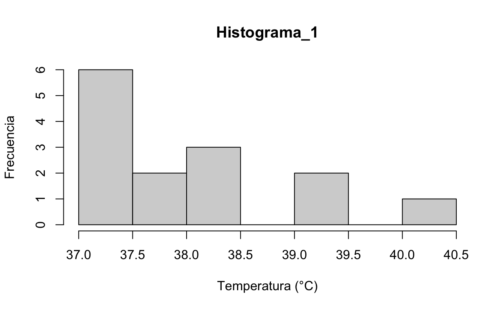
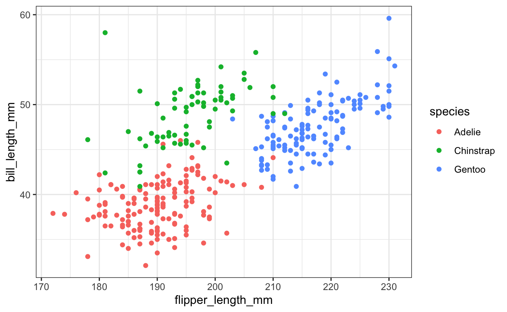
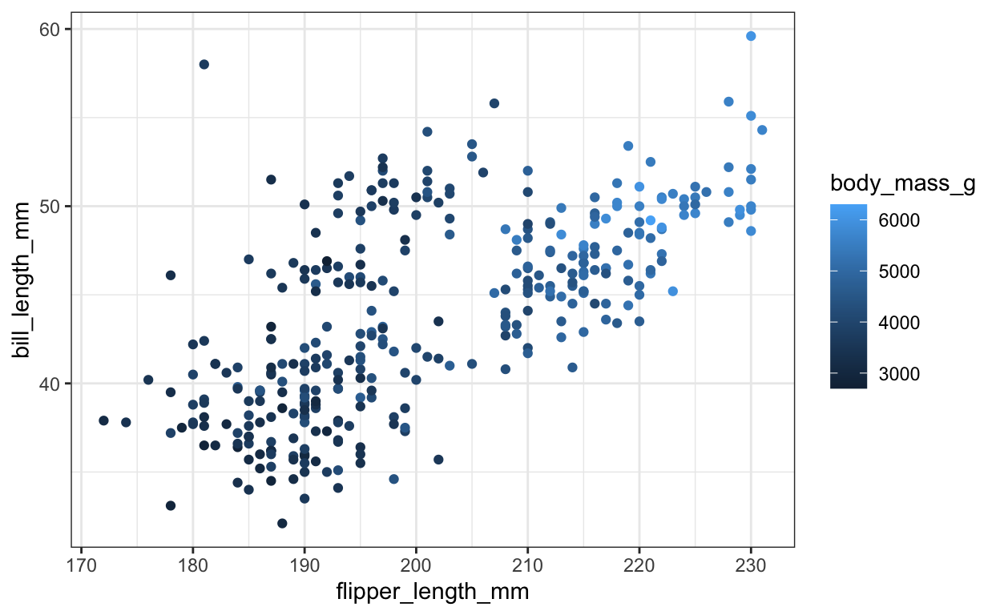
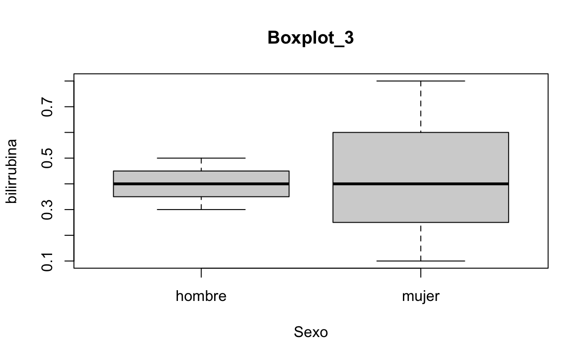
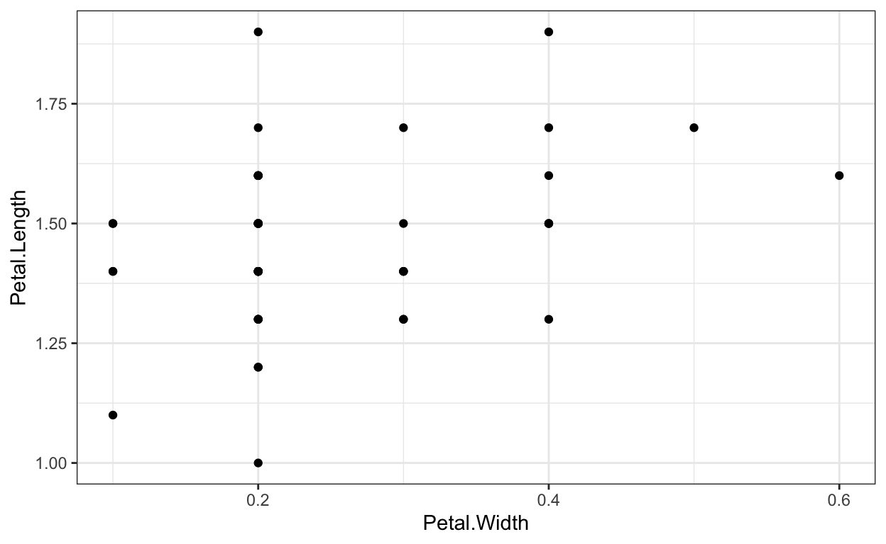
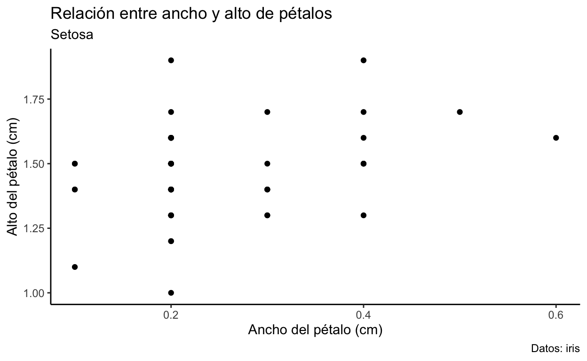
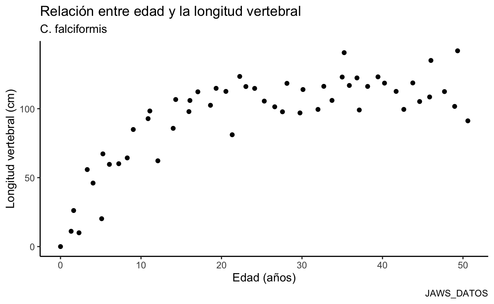

Para comenzar con el análisis de datos, la materia prima son los datos bien organizados. En R existen diferentes maneras de tener acceso a ellos.
Generar tu base de datos desde R, dato por dato, vector por vector, matriz por matriz, objeto por objeto:
datos.x<- c(1,3,5,7,9,12,15,18,21,24)
datos.x
[1] 1 3 5 7 9 12 15 18 21 24datos.y<-c(5,15,20,25,30,35,40,45,50,55)
datos.y
[1] 5 15 20 25 30 35 40 45 50 55matriz1<-matrix(datos.x,datos.y)
matriz1
[,1] [,2]
[1,] 1 12
[2,] 3 15
[3,] 5 18
[4,] 7 21
[5,] 9 24Con “seq()” para generar un vector de los numeros de 1 a 100:
uno.a.cien<-seq(1,100,1) #Los numeros de 1 a 100, con intervalos de 1
uno.a.cien
[1] 1 2 3 4 5 6 7 8 9 10 11 12 13 14 15 16 17 18
[19] 19 20 21 22 23 24 25 26 27 28 29 30 31 32 33 34 35 36
[37] 37 38 39 40 41 42 43 44 45 46 47 48 49 50 51 52 53 54
[55] 55 56 57 58 59 60 61 62 63 64 65 66 67 68 69 70 71 72
[73] 73 74 75 76 77 78 79 80 81 82 83 84 85 86 87 88 89 90
[91] 91 92 93 94 95 96 97 98 99 100Con “rep()” para repetir numeros:
reps1<-rep(10,5) #5 repeticiones del numero 10
reps1
[1] 10 10 10 10 10reps2<-rep(2,25) # 25 repeticiones del número 2
reps2
[1] 2 2 2 2 2 2 2 2 2 2 2 2 2 2 2 2 2 2 2 2 2 2 2 2 2 [1] 10 10 10 10 10 2 2 2 2 2 2 2 2 2 2 2 2 2 2 2 2 2 2 2 2
[26] 2 2 2 2 2 [1] 14 14 14 14 14 7 7 7 7 7 7 7 7 7 7 7 7 7 7 7 7 7 7 7 7
[26] 7 7 7 7 7 [1] "Mexico" "Mexico" "Mexico" "Mexico" "Mexico"
[6] "Mexico" "Mexico" "Mexico" "Mexico" "Mexico"
[11] "Mexico" "Mexico" "Mexico" "Mexico" "Mexico"
[16] "Costa Rica" "Costa Rica" "Costa Rica" "Costa Rica" "Costa Rica"
[21] "Costa Rica" "Costa Rica" "Costa Rica" "Costa Rica" "Costa Rica"
[26] "Costa Rica" "Costa Rica" "Costa Rica" "Costa Rica" "Costa Rica"Creamos una matríz con los tres vectores; 30 filas y 3 columnas
[,1] [,2] [,3]
[1,] "10" "14" "Mexico"
[2,] "10" "14" "Mexico"
[3,] "10" "14" "Mexico"
[4,] "10" "14" "Mexico"
[5,] "10" "14" "Mexico"
[6,] "2" "7" "Mexico"
[7,] "2" "7" "Mexico"
[8,] "2" "7" "Mexico"
[9,] "2" "7" "Mexico"
[10,] "2" "7" "Mexico"
[11,] "2" "7" "Mexico"
[12,] "2" "7" "Mexico"
[13,] "2" "7" "Mexico"
[14,] "2" "7" "Mexico"
[15,] "2" "7" "Mexico"
[16,] "2" "7" "Costa Rica"
[17,] "2" "7" "Costa Rica"
[18,] "2" "7" "Costa Rica"
[19,] "2" "7" "Costa Rica"
[20,] "2" "7" "Costa Rica"
[21,] "2" "7" "Costa Rica"
[22,] "2" "7" "Costa Rica"
[23,] "2" "7" "Costa Rica"
[24,] "2" "7" "Costa Rica"
[25,] "2" "7" "Costa Rica"
[26,] "2" "7" "Costa Rica"
[27,] "2" "7" "Costa Rica"
[28,] "2" "7" "Costa Rica"
[29,] "2" "7" "Costa Rica"
[30,] "2" "7" "Costa Rica"Otra manera de visualizar los datos es con la función “View ()”
View(matriz2)
Crearemos un dataframe
datos_u <- data.frame(meses = month.name[1:5], numeros=1:5, logico=c(FALSE, TRUE, FALSE, FALSE, FALSE))
datos_u
meses numeros logico
1 January 1 FALSE
2 February 2 TRUE
3 March 3 FALSE
4 April 4 FALSE
5 May 5 FALSE MESES NUMEROS LOGICO
1 January 1 FALSE
2 February 2 TRUE
3 March 3 FALSE
4 April 4 FALSE
5 May 5 FALSEView(datos_u)
Un ejemplo más de data frame, ahora con pacientes
pacientes<-c("juan", "pedro", "armando", "eliel","oscar", "roberto","carlos")
pacientes
[1] "juan" "pedro" "armando" "eliel" "oscar" "roberto" "carlos" bilirrubina<-c(0.1,0.3,0.4,0.4,0.4,0.5,0.8)
bilirrubina
[1] 0.1 0.3 0.4 0.4 0.4 0.5 0.8Datoslab<-data.frame(pacientes,bilirrubina)
Datoslab
pacientes bilirrubina
1 juan 0.1
2 pedro 0.3
3 armando 0.4
4 eliel 0.4
5 oscar 0.4
6 roberto 0.5
7 carlos 0.8View(Datoslab)
Utilizar datos contenidos dentro de algún paquete previamente cargado en R, esto ya lo hemos realizado anteriormente con el maestro Arturo. En este caso, utilizaremos la base de datos mpg incluída en el paquete ggplot2. El primer paso es, conocer la información que contiene. Para ello guardaremos la base en un objeto que llamaremos df1:
View(df1)
iris
Sepal.Length Sepal.Width Petal.Length Petal.Width Species
1 5.1 3.5 1.4 0.2 setosa
2 4.9 3.0 1.4 0.2 setosa
3 4.7 3.2 1.3 0.2 setosa
4 4.6 3.1 1.5 0.2 setosa
5 5.0 3.6 1.4 0.2 setosa
6 5.4 3.9 1.7 0.4 setosa
7 4.6 3.4 1.4 0.3 setosa
8 5.0 3.4 1.5 0.2 setosa
9 4.4 2.9 1.4 0.2 setosa
10 4.9 3.1 1.5 0.1 setosa
11 5.4 3.7 1.5 0.2 setosa
12 4.8 3.4 1.6 0.2 setosa
13 4.8 3.0 1.4 0.1 setosa
14 4.3 3.0 1.1 0.1 setosa
15 5.8 4.0 1.2 0.2 setosa
16 5.7 4.4 1.5 0.4 setosa
17 5.4 3.9 1.3 0.4 setosa
18 5.1 3.5 1.4 0.3 setosa
19 5.7 3.8 1.7 0.3 setosa
20 5.1 3.8 1.5 0.3 setosa
21 5.4 3.4 1.7 0.2 setosa
22 5.1 3.7 1.5 0.4 setosa
23 4.6 3.6 1.0 0.2 setosa
24 5.1 3.3 1.7 0.5 setosa
25 4.8 3.4 1.9 0.2 setosa
26 5.0 3.0 1.6 0.2 setosa
27 5.0 3.4 1.6 0.4 setosa
28 5.2 3.5 1.5 0.2 setosa
29 5.2 3.4 1.4 0.2 setosa
30 4.7 3.2 1.6 0.2 setosa
31 4.8 3.1 1.6 0.2 setosa
32 5.4 3.4 1.5 0.4 setosa
33 5.2 4.1 1.5 0.1 setosa
34 5.5 4.2 1.4 0.2 setosa
35 4.9 3.1 1.5 0.2 setosa
36 5.0 3.2 1.2 0.2 setosa
37 5.5 3.5 1.3 0.2 setosa
38 4.9 3.6 1.4 0.1 setosa
39 4.4 3.0 1.3 0.2 setosa
40 5.1 3.4 1.5 0.2 setosa
41 5.0 3.5 1.3 0.3 setosa
42 4.5 2.3 1.3 0.3 setosa
43 4.4 3.2 1.3 0.2 setosa
44 5.0 3.5 1.6 0.6 setosa
45 5.1 3.8 1.9 0.4 setosa
46 4.8 3.0 1.4 0.3 setosa
47 5.1 3.8 1.6 0.2 setosa
48 4.6 3.2 1.4 0.2 setosa
49 5.3 3.7 1.5 0.2 setosa
50 5.0 3.3 1.4 0.2 setosa
51 7.0 3.2 4.7 1.4 versicolor
52 6.4 3.2 4.5 1.5 versicolor
53 6.9 3.1 4.9 1.5 versicolor
54 5.5 2.3 4.0 1.3 versicolor
55 6.5 2.8 4.6 1.5 versicolor
56 5.7 2.8 4.5 1.3 versicolor
57 6.3 3.3 4.7 1.6 versicolor
58 4.9 2.4 3.3 1.0 versicolor
59 6.6 2.9 4.6 1.3 versicolor
60 5.2 2.7 3.9 1.4 versicolor
61 5.0 2.0 3.5 1.0 versicolor
62 5.9 3.0 4.2 1.5 versicolor
63 6.0 2.2 4.0 1.0 versicolor
64 6.1 2.9 4.7 1.4 versicolor
65 5.6 2.9 3.6 1.3 versicolor
66 6.7 3.1 4.4 1.4 versicolor
67 5.6 3.0 4.5 1.5 versicolor
68 5.8 2.7 4.1 1.0 versicolor
69 6.2 2.2 4.5 1.5 versicolor
70 5.6 2.5 3.9 1.1 versicolor
71 5.9 3.2 4.8 1.8 versicolor
72 6.1 2.8 4.0 1.3 versicolor
73 6.3 2.5 4.9 1.5 versicolor
74 6.1 2.8 4.7 1.2 versicolor
75 6.4 2.9 4.3 1.3 versicolor
76 6.6 3.0 4.4 1.4 versicolor
77 6.8 2.8 4.8 1.4 versicolor
78 6.7 3.0 5.0 1.7 versicolor
79 6.0 2.9 4.5 1.5 versicolor
80 5.7 2.6 3.5 1.0 versicolor
81 5.5 2.4 3.8 1.1 versicolor
82 5.5 2.4 3.7 1.0 versicolor
83 5.8 2.7 3.9 1.2 versicolor
84 6.0 2.7 5.1 1.6 versicolor
85 5.4 3.0 4.5 1.5 versicolor
86 6.0 3.4 4.5 1.6 versicolor
87 6.7 3.1 4.7 1.5 versicolor
88 6.3 2.3 4.4 1.3 versicolor
89 5.6 3.0 4.1 1.3 versicolor
90 5.5 2.5 4.0 1.3 versicolor
91 5.5 2.6 4.4 1.2 versicolor
92 6.1 3.0 4.6 1.4 versicolor
93 5.8 2.6 4.0 1.2 versicolor
94 5.0 2.3 3.3 1.0 versicolor
95 5.6 2.7 4.2 1.3 versicolor
96 5.7 3.0 4.2 1.2 versicolor
97 5.7 2.9 4.2 1.3 versicolor
98 6.2 2.9 4.3 1.3 versicolor
99 5.1 2.5 3.0 1.1 versicolor
100 5.7 2.8 4.1 1.3 versicolor
101 6.3 3.3 6.0 2.5 virginica
102 5.8 2.7 5.1 1.9 virginica
103 7.1 3.0 5.9 2.1 virginica
104 6.3 2.9 5.6 1.8 virginica
105 6.5 3.0 5.8 2.2 virginica
106 7.6 3.0 6.6 2.1 virginica
107 4.9 2.5 4.5 1.7 virginica
108 7.3 2.9 6.3 1.8 virginica
109 6.7 2.5 5.8 1.8 virginica
110 7.2 3.6 6.1 2.5 virginica
111 6.5 3.2 5.1 2.0 virginica
112 6.4 2.7 5.3 1.9 virginica
113 6.8 3.0 5.5 2.1 virginica
114 5.7 2.5 5.0 2.0 virginica
115 5.8 2.8 5.1 2.4 virginica
116 6.4 3.2 5.3 2.3 virginica
117 6.5 3.0 5.5 1.8 virginica
118 7.7 3.8 6.7 2.2 virginica
119 7.7 2.6 6.9 2.3 virginica
120 6.0 2.2 5.0 1.5 virginica
121 6.9 3.2 5.7 2.3 virginica
122 5.6 2.8 4.9 2.0 virginica
123 7.7 2.8 6.7 2.0 virginica
124 6.3 2.7 4.9 1.8 virginica
125 6.7 3.3 5.7 2.1 virginica
126 7.2 3.2 6.0 1.8 virginica
127 6.2 2.8 4.8 1.8 virginica
128 6.1 3.0 4.9 1.8 virginica
129 6.4 2.8 5.6 2.1 virginica
130 7.2 3.0 5.8 1.6 virginica
131 7.4 2.8 6.1 1.9 virginica
132 7.9 3.8 6.4 2.0 virginica
133 6.4 2.8 5.6 2.2 virginica
134 6.3 2.8 5.1 1.5 virginica
135 6.1 2.6 5.6 1.4 virginica
136 7.7 3.0 6.1 2.3 virginica
137 6.3 3.4 5.6 2.4 virginica
138 6.4 3.1 5.5 1.8 virginica
139 6.0 3.0 4.8 1.8 virginica
140 6.9 3.1 5.4 2.1 virginica
141 6.7 3.1 5.6 2.4 virginica
142 6.9 3.1 5.1 2.3 virginica
143 5.8 2.7 5.1 1.9 virginica
144 6.8 3.2 5.9 2.3 virginica
145 6.7 3.3 5.7 2.5 virginica
146 6.7 3.0 5.2 2.3 virginica
147 6.3 2.5 5.0 1.9 virginica
148 6.5 3.0 5.2 2.0 virginica
149 6.2 3.4 5.4 2.3 virginica
150 5.9 3.0 5.1 1.8 virginicaView(iris)
Utilizar una base de datos contenida en un archivo de Excel. Para esto, es importante colocar previamente el archivo de excel en nuestra carpeta de trabajo “carpeta base” o directorio de trabajo. Le indicamos a R que lea el archivo de tipo excel, utilizando el paquete lector “ºxl” y además que genere un objeto llamado igual que nuestro archivo excel “tempdata” contenido en la carpeta base. Esto se realiza con el siguiente código:
library(readxl)
tempdata <- read_excel("data/tempdata.xlsx")
Para visualizar nuestros datos utilizamos la función “View ()”
View(tempdata)
Otra manera de hacer lo mismo es importar los datos es dando clic en el botón “Import Datasets”, del cual desplegará un menú y daremos clic en “From Excel…”, con el botón browse podemos buscar nuestro archivo Excel y seleccionarlo, hacemos clic en open y abrirá una ventana, podrás cambiar el nombre del archivo en el espacio “Name:” y elegir la hoja de cálculo de tu archivo excel en donde están contenidos tus datos en el espacio “Sheet:”. Por último da clic en import y te abrirá en una pestaña nueva tus datos de excel importados a R. De manera simultanea se habrá creado un objeto con el nombre de tu archivo.
con datos digitados dirctamente en R
barplot(Datoslab$bilirrubina~Datoslab$pacientes,
main = "Grafica de barras",
xlab = "Pacientes",
ylab = "Bilirrubina")

HISTOGRAMA DE FRECUENCIAS Utilizamos los datos importados desde un archivo de Excel
hist(tempdata$temperatura,
main = "Histograma_1",
xlab = "Temperatura (°C)",
ylab = "Frecuencia")

Crear histograma de frecuencia de la longitud de los pétalos usamos la famosisima base “iris”
hist(iris$Petal.Length,
breaks = "scott", # método
main = "Histograma_2",
xlab = "Longitud del pétalo(cm)",
ylab = "Frecuencia")

Con datos extraidos del archivo Excel
boxplot(tempdata$temperatura~tempdata$grupo,
main = "Boxplot_1",
xlab = "Grupo",
ylab = "Temperatura (°C)")

Otra boxplot Con nuevos datos de, pacientes, bilirribina y sexo
pacientes2<-c("Juana", "Pedro", "Armando", "Isabel","Oscar", "Roberto","Carla")
pacientes2
[1] "Juana" "Pedro" "Armando" "Isabel" "Oscar" "Roberto" "Carla" sexo<-c("mujer", "hombre", "hombre","mujer","hombre","hombre","mujer") #agregamos la variable sexo
sexo
[1] "mujer" "hombre" "hombre" "mujer" "hombre" "hombre" "mujer" bilirrubina2<-c(0.1,0.3,0.4,0.4,0.4,0.5,0.8)
bilirrubina2
[1] 0.1 0.3 0.4 0.4 0.4 0.5 0.8Datoslab2<-data.frame(pacientes2,bilirrubina2,sexo)
Datoslab2
pacientes2 bilirrubina2 sexo
1 Juana 0.1 mujer
2 Pedro 0.3 hombre
3 Armando 0.4 hombre
4 Isabel 0.4 mujer
5 Oscar 0.4 hombre
6 Roberto 0.5 hombre
7 Carla 0.8 mujerboxplot(Datoslab2$bilirrubina2~Datoslab2$sexo,
xlab="Sexo",
ylab="bilirrubina",
main="Boxplot_3")

Gráfica de dispersión con un subconjunto de datos de iris (filtrando los datos de setosa)
#activa el paquete "dplyr"
Datos_setosa<-iris %>% filter(Species %in% c("setosa"))
#View(Datos_setosa)
disp_pet<- ggplot(data = Datos_setosa, aes(x = Petal.Width , y = Petal.Length)) + geom_point()
disp_pet

Hacemos bella nuestra gráfica
plot_edit <- disp_pet + labs(x = 'Ancho del pétalo (cm)',
y = 'Alto del pétalo (cm)',
title = 'Relación entre ancho y alto de pétalos',
subtitle = 'Setosa',
caption = 'Datos: iris') + theme_classic()
plot_edit

Más práctica con nuevos datos de excel, desde el archivo JAWS_DATOS
library(readxl)
JAWS_DATOS <- read_excel("data/JAWS_DATOS.xlsx")
View(JAWS_DATOS)
Graficamos los datos
plot_jaws <- ggplot(data = JAWS_DATOS, aes(x = age, y = bone)) +
geom_point() +
labs(x = 'Edad (años)',
y = 'Longitud vertebral (cm)',
title = 'Relación entre edad y la longitud vertebral',
subtitle = 'C. falciformis',
caption = 'JAWS_DATOS') +
theme_classic()
plot_jaws

[1] 5.4[1] 4.5summary(tempdata)
grupo temperatura
Length:14 Min. :37.10
Class :character 1st Qu.:37.33
Mode :character Median :37.85
Mean :38.06
3rd Qu.:38.35
Max. :40.10 summary(JAWS_DATOS)
age bone
Min. : 0.00 Min. : 0.00
1st Qu.:11.35 1st Qu.: 85.13
Median :24.72 Median :103.85
Mean :24.80 Mean : 93.98
3rd Qu.:37.05 3rd Qu.:115.75
Max. :50.60 Max. :142.00